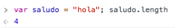

4. Crea una función que reciba 2 cadenas por parámetro.
a. Dicha función imprimirá por consola qué cadena tiene mayor longitud.
Para ello puedes usar la propiedad length tal y como muestra el ejemplo:

b. Si el tipo de algún parámetro no es string (typeof param !== "string"), debes imprimir un error.
Llama a la función 3 veces con diferentes parámetros. En una de esas llamadas
pásale por parámetro un valor que no sea string.
Llama a la función 3 veces con diferentes parámetros. En una de esas llamadas
pásale por parámetro un valor que no sea string.